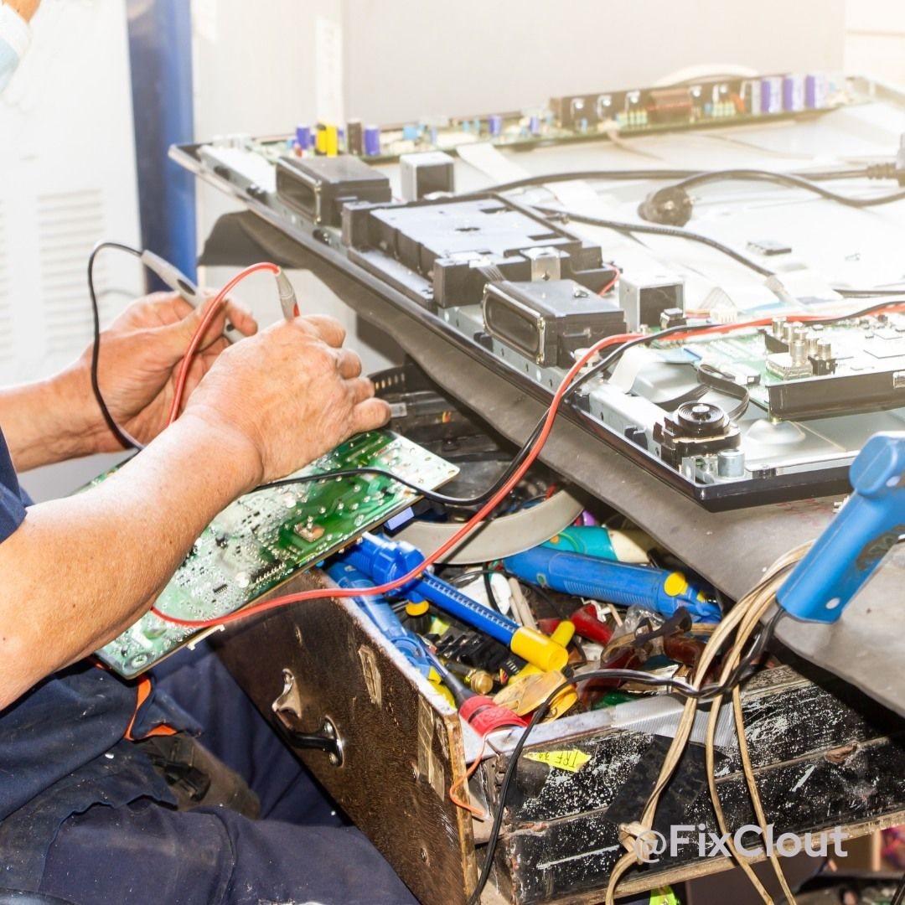

OVERVIEW OF Damascene
electronic markert
Damascene electronic markertwas
introduced in 2015 as the way to help customers getting
electronic divice that fitting their desire.
to achieve this we work with large company from abroad which
trade electronic divice including
the tablet,smart phone,ipod ,desk top,lap top and another
electronic divice we have electronic divice that fit the
customers desire.
OUR OBJECTIVES
OUR OBJECTIVES is to provide our
customers with the they wants and to reach them every where
they are located across the country
OUR VISION
To impove the services we deliver
to our customer to fit their maximum satisfaction of them
through electronic divice they want
VISIT US ON:
WATSAPP
watsapp
facebook
Damascene MR
VISIT OUR HEADQUATER
NYARUGENGE,KIGALI,RWANDA
NEAR MAKUZA BUILGING
we provide servince of maintainance
:>- computer
maintainance
- Hardware check: Diagnose and repair physical damage.
Software updates: Install, patch, and optimize programs.
Virus removal: Detect, eliminate, and secure system.
Data backup: Safeguard files and ensure recovery.
Performance tuning: Enhance speed and operating efficiency.
Network setup: Configure reliable and secure
connections.
|  |
- smartphone maintainance
- Screen repair:
Fix cracks, restore display functionality.
Battery replacement: Extend power life and performance.
Software updates: Ensure apps compatibility and
security improvements.
Data recovery: Retrieve lost files and memories.
Virus removal: Remove malware, protect sensitive information.
Network troubleshooting: Fix connectivity
and signal issues.